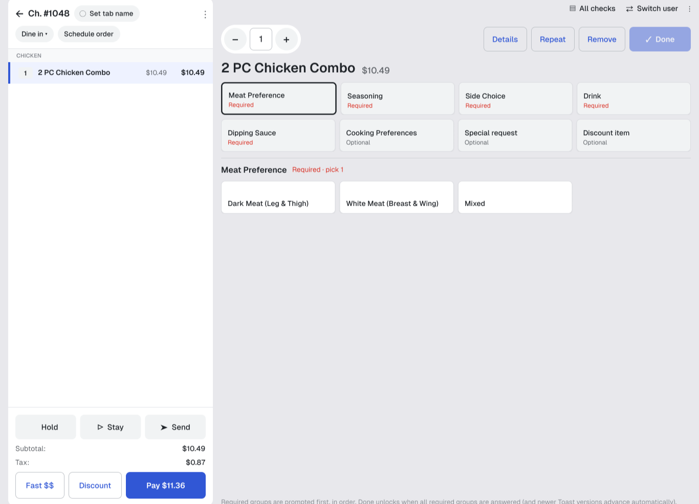
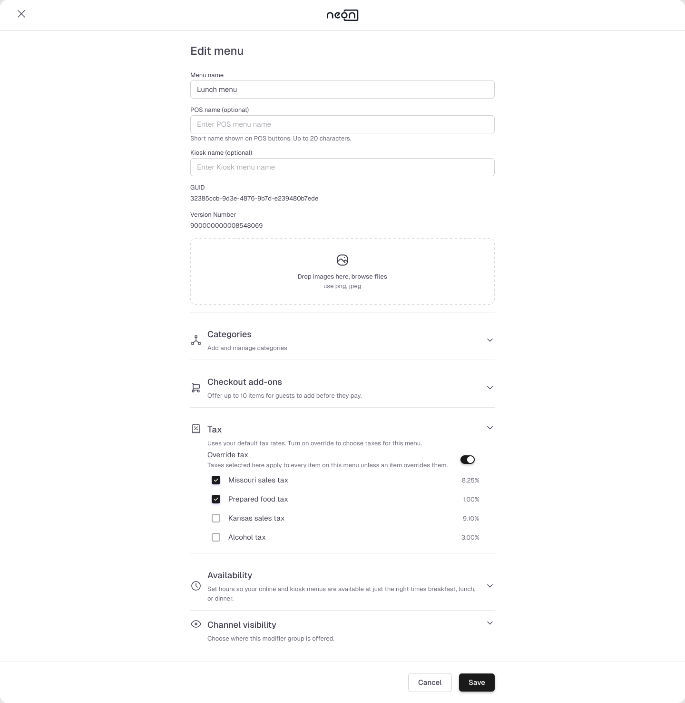
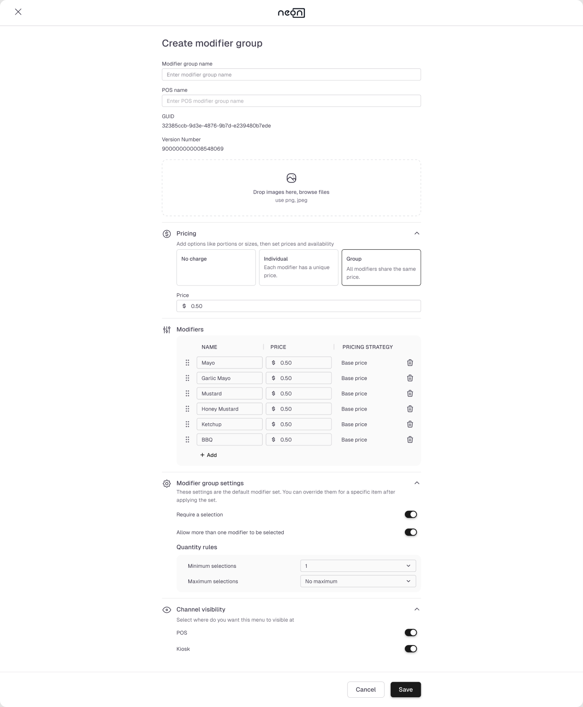
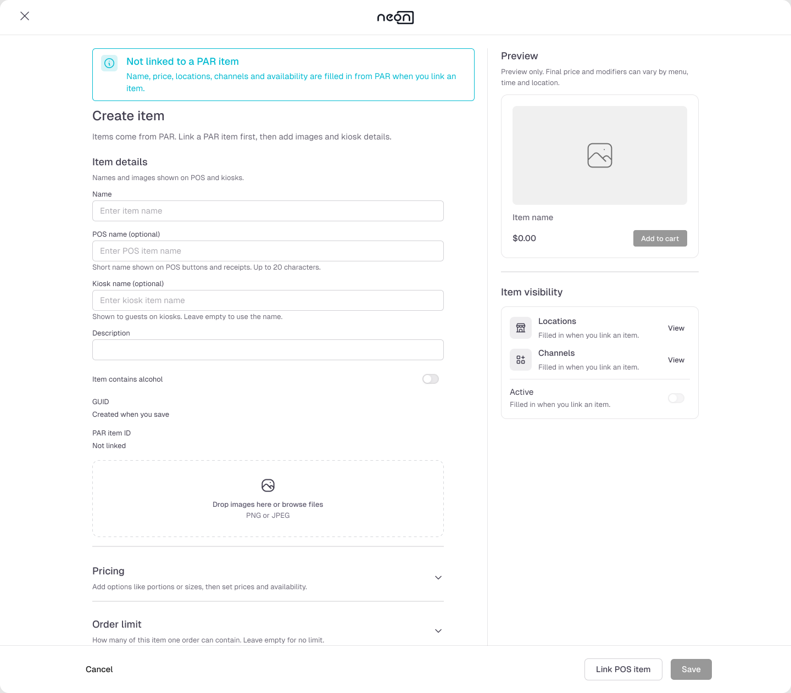
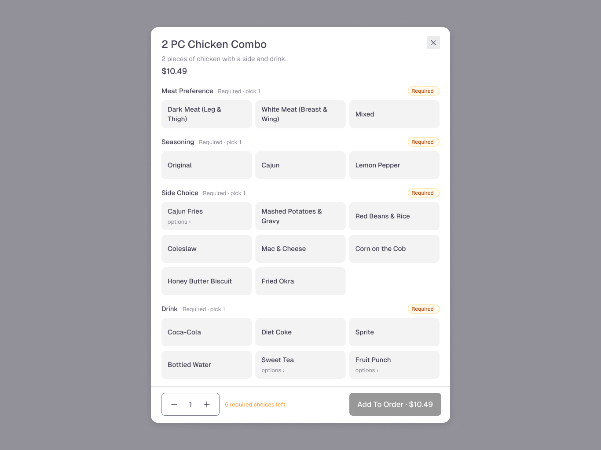
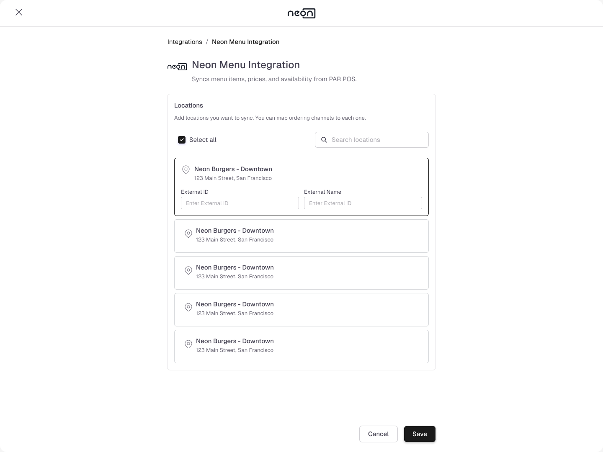
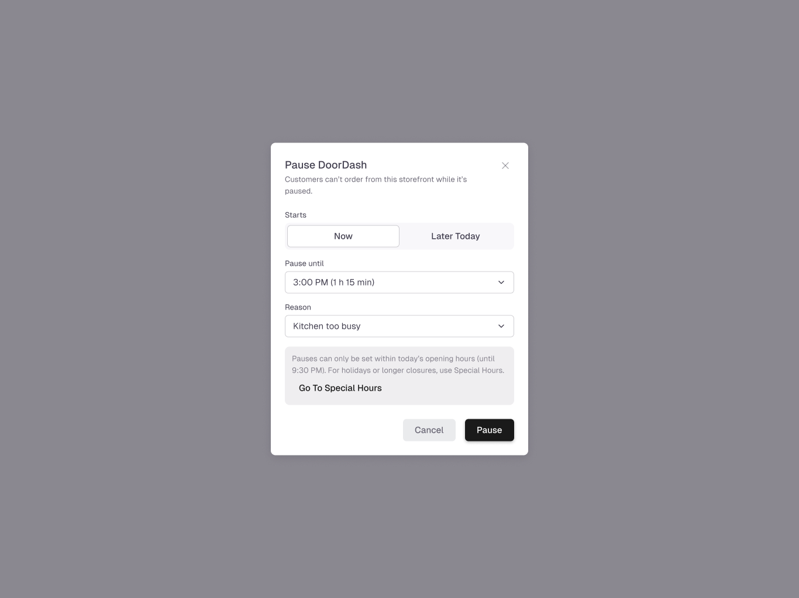
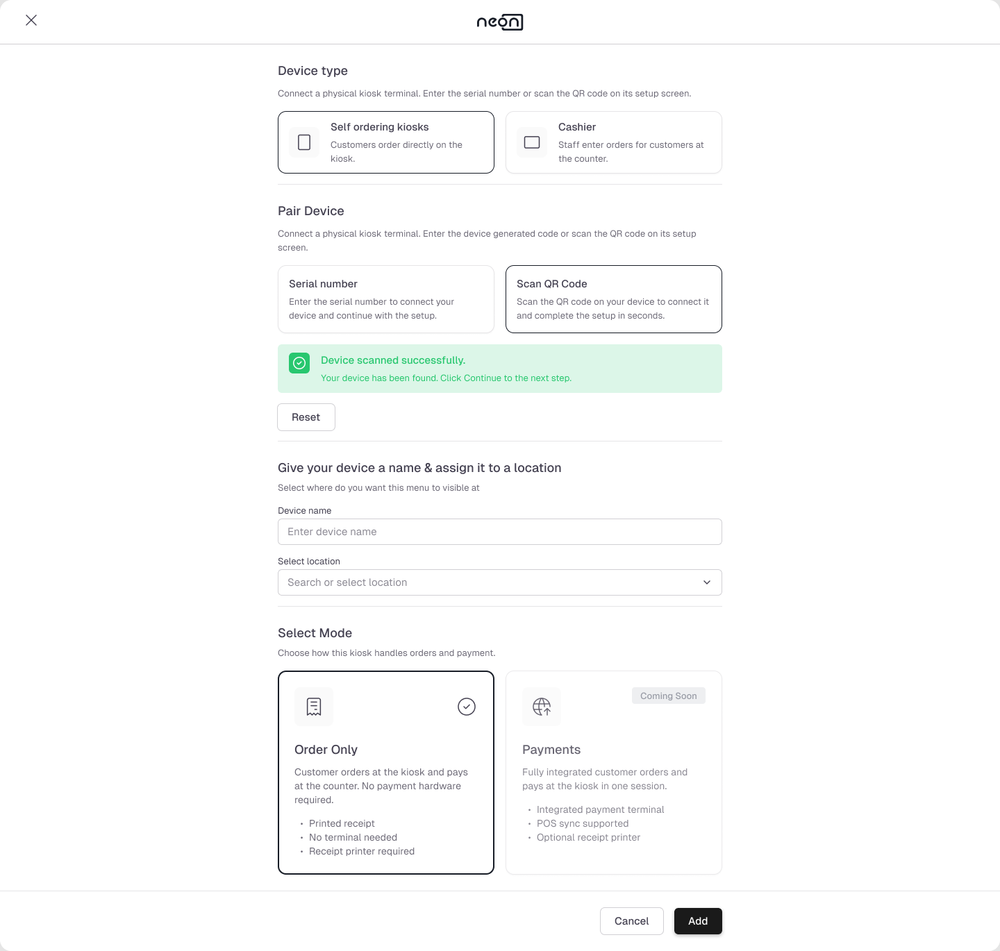

Neon Ordering
Product Designer & Product Manager, solo designer
A restaurant ordering platform for quick-service chains: a self-order kiosk for guests, a cashier app for staff, and a menu manager and integrations for the people who run the stores.

Summary
I’m the only designer on Neon’s ordering platform, and its product manager. I took it from competitor research and open questions on a whiteboard to three releases in our first client’s stores, a US quick-service burger chain, and I’m now designing the cashier app and integrations for the next clients.
- Turned a POS-synced menu with modifiers nested up to five levels deep, and thousands of options in a single combo, into ordering flows a guest or a cashier can get through quickly.
- Designed for failure as much as for success: payment, printer and POS outages all follow one rule — the guest always knows whether they were charged, and always has a way out.
- Built the admin side so restaurants run it themselves: menu inheritance and overrides, taxes, kiosk theme and order flow, banners, devices and integrations.
Role and responsibilities
One designer, one product owner: I write the requirements, design every surface, and hand off to the development team release by release.
- Product management
- Research, scope and roadmap with stakeholders; PRDs and tickets with acceptance criteria; release planning with the dev team.
- Self-order kiosk
- Guest ordering flow, nested modifiers, upsells, payment, error and offline states, and an accessibility reach mode.
- Menu manager
- Catalog and menu items with inheritance and overrides, modifier groups and pricing, taxes, kiosk banners and publishing.
- Cashier app
- Quick order, modifiers and payment at the counter, an orders feed for delivery apps, and store settings.
- Integrations & devices
- POS connection and location mapping, delivery channels, kiosk pairing and device management.
- Developer handoff
- Handover docs with before/after changes, behaviour rules, QA checklists and open questions.
Process
Research first, then decide what not to build. Before designing the menu manager I tore down how leading ordering and POS products handle importing, building, editing and 86’ing menus, mapped how a POS models menus, items and modifier groups, and put every open question on the board for stakeholders to answer — “Needed”, “Won’t do now”, “One POS first, others later”.
- Research & open questions
Competitor teardowns, POS data models, and stakeholder answers captured next to each question.
- Scope
Split must-haves from later phases — for example, read-only menu sync from the POS first, write-back later.
- Explore options
Alternatives side by side (A/B, sometimes C and D) with a recommendation and the trade-offs.
- Audit my own work
Gap, copy and consistency audits before handoff — missing states, totals that don’t add up, terms used two ways.
- Handoff
Handover docs, behaviour rules and tickets with acceptance criteria.
- Release & feedback
Client feedback from the stores shapes the next release.
Kiosk: designing for when things go wrong
The client couldn’t hold unpaid orders, so “save the order and pay later” was never an option. That single constraint reshaped every error flow:
- If the payment terminal is out of service, the kiosk stops taking orders at the start screen, instead of letting a guest build a bag they can’t pay for.
- Every error says whether the guest was charged, and every screen has a way out. The copy says “order at the counter”, never “pay at the counter”.
- A short reference number appears on screen; card details only ever go on the printed slip, never on a public display.
- The payment loader loops for as long as the terminal needs, because the wait has no known end. The celebration only plays on a real approval.
- A simple rule for developers: if the guest can recover where they are, it’s a modal; if they can’t, it’s a full screen.
Nested modifiers at kiosk scale
The client’s combos nest up to five levels deep — burger, side, drink, size, flavour. I explored stacked bottom sheets, a step rail and an inline pattern, and rejected the ones that came from mobile ordering: a 24-inch portrait kiosk isn’t a phone. Alongside, a kiosk sizing pass took touch targets from around 24px to 50–60px and body text from 13–15px to 17–18px, and a set of rules defined what happens when a guest changes a choice that has sub-choices.
Accessibility reach mode
On a tall kiosk, much of the screen sits above a wheelchair user’s reach. Reach mode keeps the top of the screen for information only and moves every control into the lower part, inside the ADA forward-reach range of 15–48 inches. Because kiosks are mounted at different heights, the reach line is calibrated per installation, documented with a formula and a QA checklist for developers.
Menu manager: inherit, then override
Restaurants build a catalog once and reuse it across menus, locations and channels. A menu item inherits everything from its catalog item and can override only what makes sense: locations and channels as a subset, price only when the POS doesn’t own it. Overridden fields are tagged, with a reset per field and a reset for the whole item.
Taxes follow the same model: create a rate once, assign it to a menu, and let items inherit it or override it. To keep the product from being tied to one POS, the POS name is a variable and a field is only locked when the connected POS actually syncs it.



Cashier: speed at the counter
I started by auditing my own first flow and found what I’d missed: no payment step, totals that didn’t add up across screens, and 20px tap targets. The redesign is built around how fast a cashier needs to move:
- No item photos — staff know the menu, so text tiles fit more on screen and scan faster.
- One control per job: radio to pick one, checkbox to pick several, a stepper for repeatable add-ons.
- Required modifier groups are marked, and “Done” stays locked until they’re answered.
- The order total lives on the main button; sold-out items move to the end of the list.
- Red is kept for confirmed destructive actions only, so it still means something.

Integrations people can trust
Connecting a POS or a delivery app is where a restaurant decides whether to trust the product. The setup is gated step by step — locations can’t be mapped until the POS connection works — credentials are masked, duplicate mappings are blocked, and every failure has a recovery path: requirements missing, menu import failed, channel disconnected. Delivery channels can be paused, put in busy mode or activated with a checklist and a test order.



Outcome
The kiosk is live in our first client’s stores after three releases, including a configurable order flow and guest information, nested modifiers and upsells. Feedback from the stores drove the second and third releases. The cashier app, delivery integrations and accessibility mode are next.